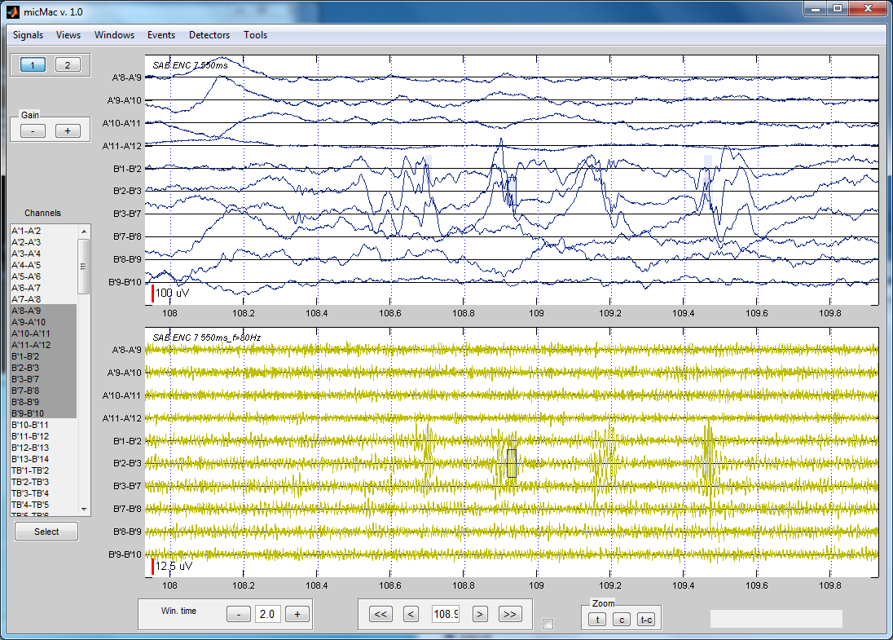

About micMac¶
Introduction¶
micMac is designed to examine EEG/iEEG recordings in a simple and intuitive way. It was originally designed for researching high frequency oscillations in intracerebral recording with both macro and micro contacts.
micMac is a Matlab interface using some parts of EEGLAB for internal processing.

Key Features¶
- Ability to switch between global visualization of many channels or precise visualization
- Multiple windows possibility. Useful with multiple screens.
- Ability to observe multiple signals simultaneously.
- Marker system to quickly jump to events of interest.